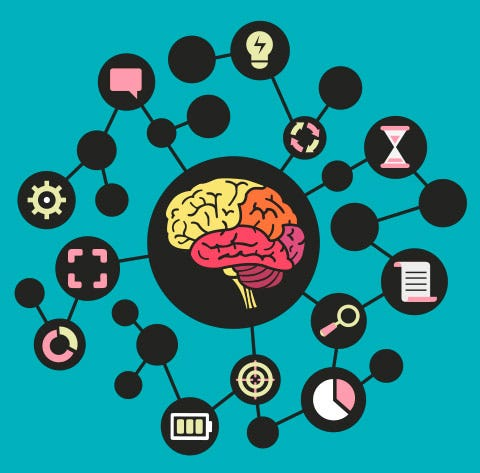

Enfoque fenomenológico
25 de marzo por Perla Edelmira Ucles Moncada La psicología fenomenológica designa pues la disciplina que mediante técnicas esencialmente descriptivas busca explicitar la esencia, la estructura o la forma de la experiencia y del comportamiento humano, eliminando en la medida de lo posible toda presuposición filosófica y cultural.
Este enfoque se basa en la idea de que la experiencia subjetiva de los individuos es fundamental para comprender su comportamiento social. Por ello, focaliza la forma en que las personas atribuyen significado a sus experiencias sociales, y cómo esto influye en su sentido de identidad, autoestima y autoconcepto.
Además, esta perspectiva explora cómo la congruencia entre las experiencias internas y la expresión externa puede influir en la calidad de las relaciones con los demás. Valora la capacidad de ponerse en el lugar del otro y comprender su experiencia personal, considerando la empatía y la comprensión como aspectos fundamentales.
¿Cuál es el propósito de la fenomenología?
La fenomenología es una filosofía y un método en investigación para comprender las experiencias vividas del ser humano en el mundo, que permite visualizar cómo logra la enfermera incorporarla en el proceso de cuidado.
Desde este marco de referencia, la fenomenología presenta varios pensadores destacados, pero revisitaremos el pensamiento de alguno de estos autores, ellos son responsables de la creación de sus contenidos esenciales.
¿Qué es la teoría fenomenológica?
La fenomenología estudia los fenómenos que se muestran en la conciencia, vale decir, reduce toda realidad a puro fenómeno en cuanto aparece como tal fenómeno en la conciencia. Pero así como fenómeno no es apariencia subjetiva, así tampoco conciencia es un estado subjetivo.
Se produce aprendizaje significativo cuando el alumno relaciona e interioriza los conocimientos recién aprendidos con sus conocimientos previos. Para Ausubel la presentación de los contenidos es primordial para que el niño pueda otorgarles significación, sea capaz de asimilarlos. Estos contenidos deben estar organizados y relacionados con los conocimientos previos del alumno. Además, es importante que el educador motive al estudiante para que mantenga una actitud activa en el proceso de aprendizaje, que sea capaz de despertar en él o ella la curiosidad por aprender, las ganas de descubrir y de experimentar.
De Ausubel también es el concepto de organizadores previos, un recurso pedagógico para que el maestro introduzca un adelanto de los contenidos y conceptos clave para tratar posteriormente el tema que impartirá en las clases. Estos organizadores previos pueden ser expositivos: con el objetivo de que el alumno vaya familiarizándose con la información nueva; y/o comparativos para que relacione el nuevo material con lo que ya sabe sobre el tema.
Un segundo modelo cognitivo del aprendizaje destacable para el ámbito de la instrucción educativa es el basado en los mapas conceptuales de Gowin. Estos mapas son organizadores gráficos de la información que muestran de manera visual los nuevos conceptos a aprender y sus relaciones. Son una herramienta didáctica que permite al alumno estructurar los nuevos contenidos, mejorando así la comprensión y asimilación de estos. Por otro lado, también es una buena estrategia para potenciar la metacognición. Si se le pide al alumno que realice estos esquemas una vez finalizado el tema en el que se ha trabajado en clase, la propia tarea en sí le ayudará a dar significado a lo aprendido y a autoevaluarse.
¿Qué estudia la fenomenología ejemplos?
La fenomenología (del griego antiguo φαινόμενoν, 'aparición', 'fenómeno', y λογος, 'estudio', 'tratado') es el estudio filosófico del mundo en tanto se manifiesta directamente en la conciencia; el estudio de las estructuras de la experiencia humana. Aunque es una empresa completamente empírica (en la tradición de Locke, Hume y Kant), se distingue de la ciencia por no intentar explicar los fenómenos en términos de objetos externos al sujeto (noúmeno), sino que se limita a describirlos y entenderlos en sus propios términos.
La fenomenología es un amplio movimiento filosófico fundado en los primeros años del siglo xx por Edmund Husserl y luego fue ampliado por un círculo de sus seguidores en las universidades de Gotinga y Múnich en Alemania. Esta filosofía se extendió luego a Francia, Estados Unidos y otros lugares, a menudo en contextos muy alejados de los primeros trabajos de Husserl.